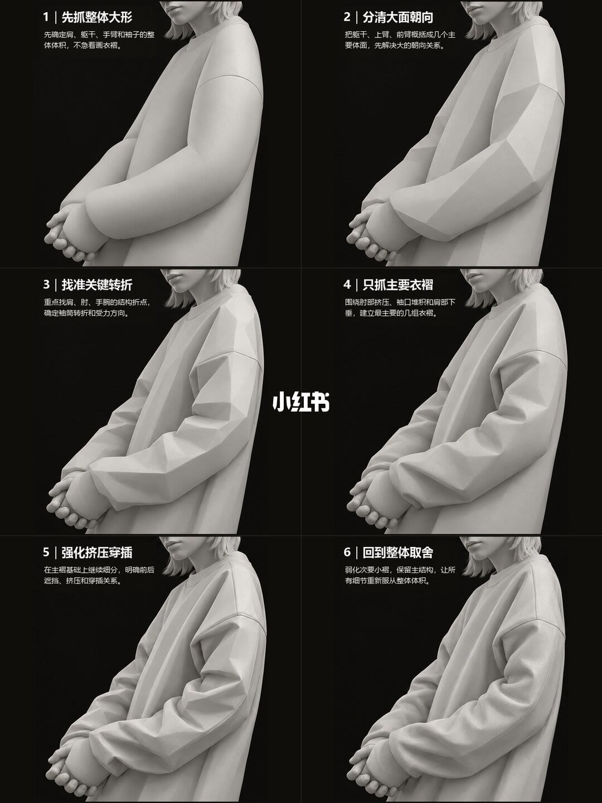
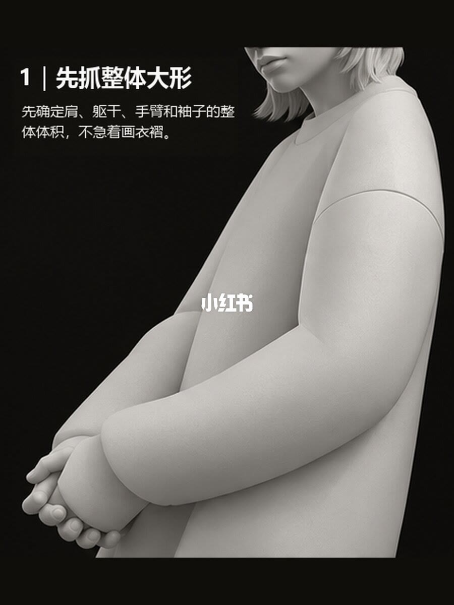
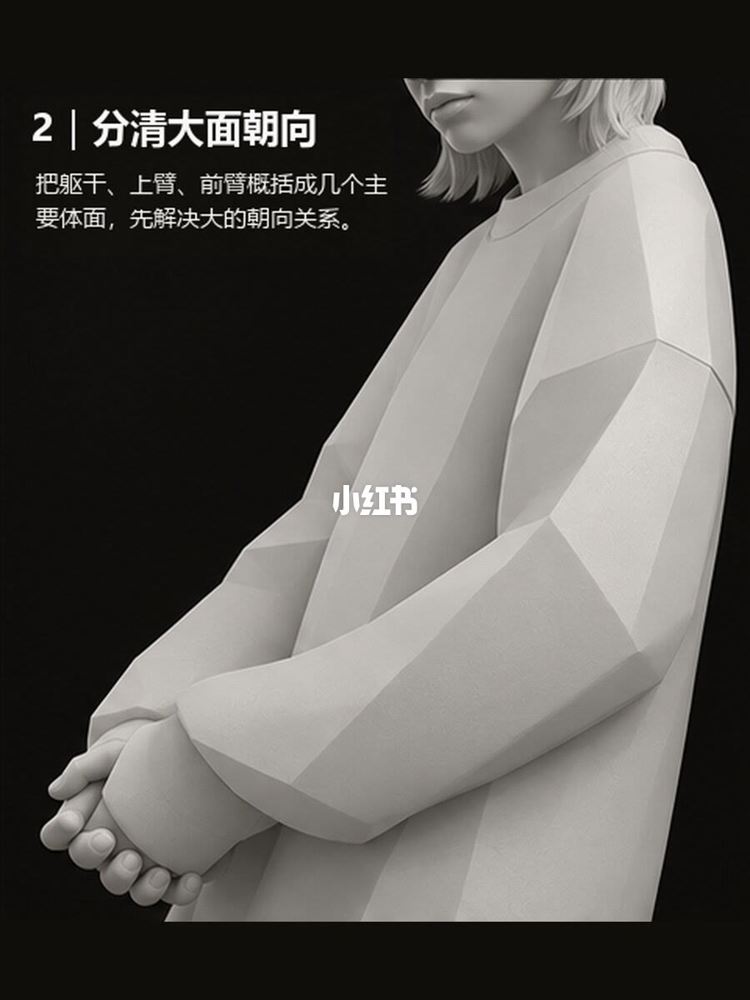
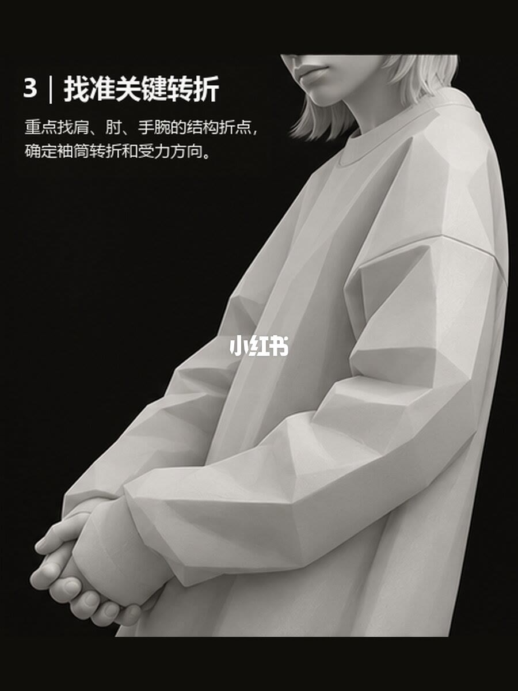
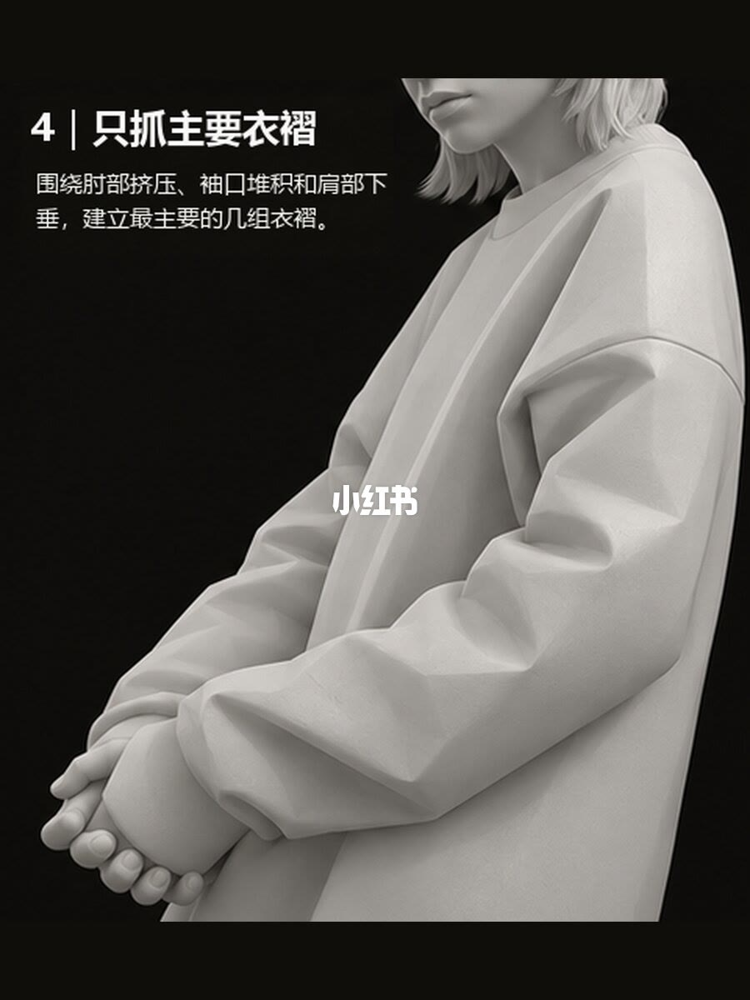
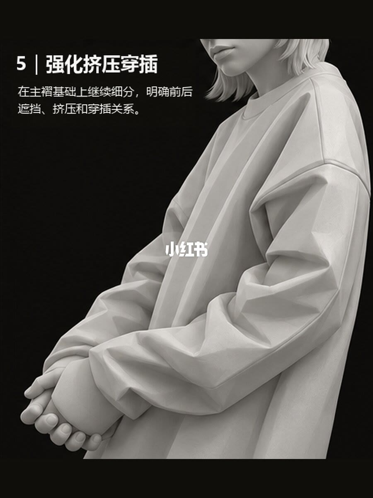
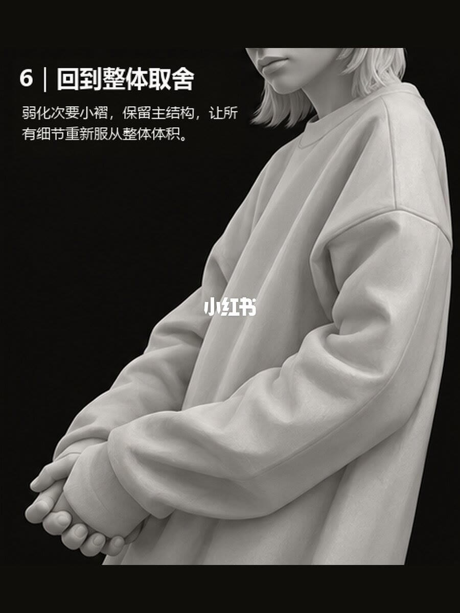

图文实录 · 小红书 · 杭州大云画室（翼帛）
从雕塑的角度理解衣服褶皱
标题要回答的是：宽松卫衣的褶从哪来。这套图用同一件灰雕塑先把衣服当成体积，再分成大面，只在肩、肘、手腕受力处留下主褶，最后把小褶收回去。笔记正文把同一顺序写成两条画法：线面速写保持「大体积—主褶—次褶」，纯线速写先定轮廓和结构线，主线重、次线轻。图上没有这两条标题，正文是对这六步的用法说明。
1/7
六步放在同一张总览上
这一页是 2×3 的六格，黑底灰雕塑，同一件宽松卫衣、侧面、双手在身前交握。格序从先抓整体大形、分清大面朝向、找准关键转折，到只抓主要衣褶、强化挤压穿插、回到整体取舍。每格左上有步骤号。画面中部有小红书水印，压住的衣面无法确认。格里的短句与后六页标题一致，整句以单页为准。

2/7
先抓整体大形
图内标题是「1 | 先抓整体大形」。正文：先确定肩、躯干、手臂和袖子的整体体积，不急着画衣褶。雕塑是光滑的大块，肩宽、袖筒厚，几乎没有褶。手的指节能看清，交握在身前。这一步解决的是衣服占多大一块，不是褶的条数。

3/7
分清大面朝向
图内标题是「2 | 分清大面朝向」。正文：把躯干、上臂、前臂概括成几个主要体面，先解决大的朝向关系。衣服从圆滑变成大块平面，胸前、袖子侧面和朝上的面分开。这些面是朝向，还不是衣褶。胸口水印盖住的那一块面无法确认。

4/7
找准关键转折
图内标题是「3 | 找准关键转折」。正文：重点找肩、肘、手腕的结构折点，确定袖筒转折和受力方向。面仍然是块面，但在肩、肘弯和腕口折得更急，袖筒顺着手臂的弯走。肩是衣服挂下去的地方，肘是袖筒改变方向的地方，腕是袖口被挡住的地方。具体折了多少度，页面没有数字。

5/7
只抓主要衣褶
图内标题是「4 | 只抓主要衣褶」。正文：围绕肘部挤压、袖口堆积和肩部下垂，建立最主要的几组衣褶。到这一页才出现成组的布褶：肘弯里是挤出来的深褶，袖口是堆起来的厚褶，肩头是垂下去的褶。胸前大面仍然平，说明主褶长在受力处，不铺满整件衣服。褶的条数页面没有标出。

6/7
强化挤压穿插
图内标题是「5 | 强化挤压穿插」。正文：在主褶基础上继续细分，明确前后的遮挡、挤压和穿插关系。肘弯和袖口的褶开始互相压住，能分出哪一块在前、哪一块被挡住。这一步是在第 5 页的三组主褶里面分前后，不是另起一套小褶。被水印挡住的胸口细节无法确认。

7/7
回到整体取舍
图内标题是「6 | 回到整体取舍」。正文：弱化次要小褶，保留主结构，让所有细节重新服从整体体积。相比上一页，小起伏被收平，留下来的仍是肘弯、袖口和肩头那几处大关系，袖筒重新读成一根体积。笔记正文把这件事写成层级：不要平均铺黑，也不要把每条褶都画满。

收尾
先体积，再三处主褶
结论：这件宽松卫衣的褶不是先画出来的。按 2/7 到 7/7，顺序是大体积、大面朝向、肩肘腕转折，然后只建立肘部挤压、袖口堆积、肩部下垂三组主褶，再在主褶里分遮挡，最后把次褶收掉。
支撑页：顺序总览在 1/7。不画褶的大形在 2/7，体面朝向在 3/7，三个折点在 4/7，三组主褶在 5/7，穿插在 6/7，取舍在 7/7。线面和纯线的用法在笔记正文，不在图内标题上。
边界：七页只演示这一件厚卫衣、手臂前屈、双手交握。没有褶的条数、角度和长度。薄料、紧身和别的衣服不在图里。图内编号是 1 到 6，实录页码要加一页总览。水印盖住的胸口衣面无法确认。